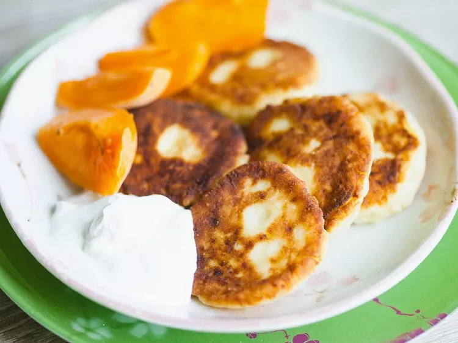

Syrniki

Syrniki are traditional pancakes from Russia that are usually served for breakfast with jam or sour cream. They're made with a cheese called tvorog, but you can use farmer's cheese or quark, which are the closest substitutions in the U.S.
Ingredients
- 1 egg
- 3 tablespoons white sugar
- 1 cup quark, well drained
- 5 tablespoons all-purpose flour, plus extra for dusting
- 1 ½ teaspoons vanilla sugar (Optional)
- ¼ teaspoon salt
- oil for frying
Directions
- Beat egg and white sugar together in a bowl until smooth. Whisk in quark cheese, flour, vanilla sugar, and salt. Mix well until dough is thick and sticky.
- Divide dough into 5 to 6 portions. Form into balls and coat with some flour. Flatten slightly to form into discs (syrniki).
- Heat oil in skillet over medium-low heat. Add the syrniki; fry until browned, 5 minutes per side.
Return to the Homepage